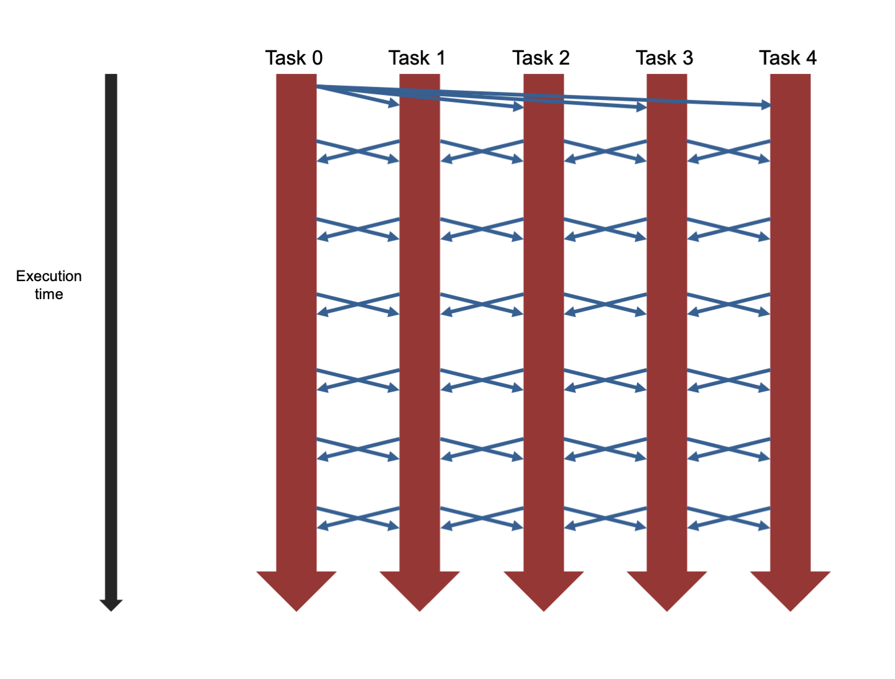

Sample job scripts¶
Basic Serial Job¶
In this section we discuss the running of a serial Python script using a couple of services as an example. But first let’s spend a few lines on partitions.
Partitions¶
As discussed, not all compute nodes offered by a service are equal. Nodes may offer different hardware (e.g. CPU type, amount of memory, number of GPUs or no GPU). There might also be differences on how the nodes are configured. To control that a job is placed on the correct kind of compute nodes, the nodes may be placed in partitions. Many but not all services have a default partition.
Information about partitions can usually be found with sinfo.
All nodes are in a single partion. There is no need to specify a partition on Tetralith.
There is no default partition on Dardel. One always has to specify a partion on Dardel.
| Partition name | Node type | Node sharing | Max job time |
|---|---|---|---|
| shared | Thin | part of a node | up to 7 days |
| main | Thin, large, huge | exclusive | up to 24 h |
| long | Thin | exclusive | up to 7 days |
| memory | Large, huge, giant | exclusive | up to 7 days |
| gpu | AMD GPU | exclusive | up to 24 h |
| gpugh | Nvidia Grace Hopper | exclusive | up to 24 h |
Explanations
- exclusive nodes: One gets all the cores, all the memory and all the GPUs of the requested nodes. The allocation gets charged for all these resources consumed, including the 128 cores of the node. Don’t use for serial jobs or small parallel jobs
- part of a node: One can request any number of cores up to 128 cores using the -n and -c options of sbatch. Your allocation gets charged for the number of requested cores. Use for serial jobs and small parallel jobs
On Cosmos at LUNARC you will be placed in the CPU partition by default. If you need access to a GPU node, you need to select a partition. Please visit the LUNARC documentation on readthedocs.io for a detailed discussion.
There is only a single partition, batch, that users can submit jobs to. The system then figures out, based on requested features which actual partition(s) the job should be sent to.
Since there is only one partition available for users to submit jobs to, you should remove any use of #SBATCH -p you may have in your scripts.
Previously, the most common use of -p was for targeting the LargeMemory nodes, this is now done using a feature request like this:
Examples by service¶
Let’s say you have a simple Python script called mmmult.py that creates 2 random-valued matrices, multiplies them together, and prints the shape of the result and the computation time. Let’s also say that you want to run this code in your current working directory. Here is how you can run that program utilising 1 core on 1 node on a number of services:
#!/bin/bash
# Set account
#SBATCH -A <project ID>
# Set the time
#SBATCH -t 00:10:00
# ask for 1 core, serial running
#SBATCH -n 1 # Asking for 1 core
# name output and error file
#SBATCH -o process_%j.out
#SBATCH -e process_%j.err
# write this script to stdout-file - useful for scripting errors
cat $0
# load a modern Python distribution and make NumPy available
module load buildenv-gcc/2023b-eb
module load Python/3.11.5 SciPy-bundle/2023.11
# Run your Python script
python mmmult.py
On Dardel you always have to specify a partition.
#!/bin/bash
#SBATCH -A <project ID> # Change to your own project
#SBATCH --time=00:10:00 # Asking for 10 minutes
#SBATCH -n 1 # Asking for 1 core
#SBATCH -p shared # ask to be placed in the shared partition
#SBATCH -o process_%j.out # name the output file
#SBATCH -e process_%j.err # name the error file
cat $0
# Load any modules you need, here for cray-python/3.11.7.
module load cray-python/3.11.7
# Run your Python script
python mmmult.py
#!/bin/bash
#SBATCH -A hpc2n2025-151 # Change to your own
#SBATCH --time=00:10:00 # Asking for 10 minutes
#SBATCH -n 1 # Asking for 1 core
# Load any modules you need, here for Python/3.11.3 and compatible SciPy-bundle
module load GCC/12.3.0 Python/3.11.3 SciPy-bundle/2023.07
# Run your Python script
python mmmult.py
#!/bin/bash
#SBATCH -A luXXXX-Y-ZZ # Change to your own
#SBATCH --time=00:10:00 # Asking for 10 minutes
#SBATCH -n 1 # Asking for 1 core
# Load any modules you need, here for Python/3.11.5 and compatible SciPy-bundle
module load GCC/13.2.0 Python/3.11.5 SciPy-bundle/2023.11
# Run your Python script
python mmmult.py
#!/bin/bash -l
#SBATCH -A uppmaxXXXX-Y-ZZZ # Change to your own after the course
#SBATCH --time=00:20:00 # Asking for 20 minutes
#SBATCH -n 1 # Asking for 1 core
# Load any modules you need, here Python 3.12.3
# and a compatible SciPy-bundle
module load Python/3.12.3-GCCcore-13.3.0
module load SciPy-bundle/2024.05-gfbf-2024a
# Run your Python script
python mmmult.py
import timeit
import numpy as np
starttime = timeit.default_timer()
np.random.seed(1701)
A = np.random.randint(-1000, 1000, size=(8,4))
B = np.random.randint(-1000, 1000, size =(4,4))
print("This is matrix A:\n", A)
print("The shape of matrix A is ", A.shape)
print()
print("This is matrix B:\n", B)
print("The shape of matrix B is ", B.shape)
print()
print("Doing matrix-matrix multiplication...")
print()
C = np.matmul(A, B)
print("The product of matrices A and B is:\n", C)
print("The shape of the resulting matrix is ", C.shape)
print()
print("Time elapsed for generating matrices and multiplying them is ", timeit.default_timer() - starttime)
There is no example for Alvis since you should only use that for running GPU jobs.
OpenMP and shared memory programming¶
Shared memory programming is a parallel programming model associated with threads. You start a LINUX/UNIX process, which spawns threads. The memory of the process can be accessed by all the threads. The threads are typically placed on and often bound to different logical or physical cores of a single hardware node. The number of cores available on a node limits the number of threads one can reasonably start on a node. In shared memory programming it is typically not possible to utilise cores from different nodes. All cores need to be in the same node. The aim of spawning threads is to speed up the calculation to achieve a fast time to solution.
OpenMP is an API widely used in scientific computing to facilitate shared memory programming. The behaviour of an application utilising OpenMP can be controlled by a number of environment variables. Even the behaviour of many applications utilising a different API to facilitate shared memory programming, can be controlled by OpenMP environment variables.
When executing shared memory applications, unless there is a suitable default, one may need to ensure that only one task is used. This can be done by using the -n option of SLURM, e.g. having a line:
-c or the --cpus-per-task option. Both of which do exactly the same thing, so use only one of those. The following would request eight (logical) cores
Important
Depending on how the service you are using is configured, you might be requesting logical cores, with multiple logical cores being placed on a single physical core. This is called hyperthreading. It is important to experiment whether placing threads on multiple logical cores of a physical core benefits or hinders the performance of your application.
On most services it is not required to set the environment variable OMP_NUM_THREADS in your SLURM scripts. If you are happy with the default of the service this will be picked up from your request with the -c option. It typically uses all the cores you requested.
Hyperthreading is not active on Tetralith. By default a single thread is placed on each physical core. In the following we give an example using thread binding, which typically benefits the performance. When using binding one can easily modify how the theads are mapped onto the hardware. This can be done by changing the value of the environment variable OMP_PROC_BIND. It is advisable to experiment with the values close and spread for the binding. This can be accomplished in the below script by commenting the unwanted option and uncommenting the wanted option.
#!/bin/bash
# Set account
#SBATCH -A <project ID>
# Set the time,
#SBATCH -t 00:10:00
# ask for 8 core here, modify for your needs.
# When running OpenMP code on Tetralith one can ask up to 32 cores
#SBATCH -c 8
# name output and error file
#SBATCH -o omp_process_%j.out
#SBATCH -e omp_process_%j.err
# write this script to stdout-file - useful for scripting errors
cat $0
# process binding is typically recommended. Try what works best spread or close
#export OMP_PROC_BIND=spread
export OMP_PROC_BIND=close
# we bind to cores
export OMP_PLACES=cores
# Run your OpenMP executable
./openmp_application
On the shared partition of Dardel hyperthreading is engaged. The shared partions is typically recommended to run application spawning threads, such as those parallelised using OpenMP. Different compilers react differently to hyperthreading, in particular in combination with thread binding.
Using the -c option of sbatch you request a number of logical cores for your run. There are two logical cores per physical core, which is called hyperthreading. With this line commented, the script will place two threads on each physical core. One thread for each logical core.
We start with a submission script for the CRAY clang compiler. It is advisable to experiment with close and spread binding, as well as binding to cores or threads. Binding to cores will not utilise hyperthreading, while binding to threads does. For each of the two options we have provided the relevant lines in the script. Comment of uncomment to explore what give best performance for your application.
#!/bin/bash
# Project id - change to your own!
#SBATCH -A <proj-id>
# Number of cores per tasks
# The number of physical cores is half that number
#SBATCH -c 8
# Asking for a walltime of 5 min on the shared partition
#SBATCH --time=00:05:00
#SBATCH -p shared
#SBATCH -o process_omp_%j.out
#SBATCH -e process_omp_%j.err
cat $0
# Load a compiler toolchain so we can run an OpenMP program
module load cpe/24.11
# process binding is typically recommended. Try what works best spread or close
# export OMP_PROC_BIND=spread
export OMP_PROC_BIND=close
# we bind to cores - this disengages hyper-threading
export OMP_PLACES=cores
# we bind to threads - this engages hyper-threading
# export OMP_PLACES=threads
./openmp_application
If your application has been compiled using GCC 13.2, the following script should work. Again one should explore the effect of close or spread binding. If you want to disengage Hyperthreading, uncomment the line setting the OMP_NUM_THREADS environment variable.
#!/bin/bash
# Project id - change to your own!
#SBATCH -A <proj-id>
# Number of cores per tasks
#SBATCH -c 8
# Asking for a walltime of 5 min
#SBATCH --time=00:05:00
#SBATCH -p shared
#SBATCH -o process_omp_%j.out
#SBATCH -e process_omp_%j.err
cat $0
# Load a compiler toolchain so we can run an OpenMP program
module load gcc-native/13.2
# process binding is typically recommended. Try what works best spread or close
#export OMP_PROC_BIND=spread
export OMP_PROC_BIND=close
# we bind to cores
export OMP_PLACES=cores
# if we want to have a single thread per core and ignor hyperthreading, un-comment the below
# export OMP_NUM_THREADS=$(($SLURM_CPUS_PER_TASK/2))
./openmp_application
- Remember, Alvis is only for GPU jobs
Applications using MPI¶
Some form of message passing is required when utilising multiple nodes for a simulation. One has multiple programs, called tasks, running. Typically these are multiple copies of the same executable with each getting its own dedicated core. Each task has its own memory, which is called distributed memory. Data exchange is facilitated by coping data between the tasks. This can accomplished inside the node if both task are running on the same node or has to utilise the network if the tasks in question are located on different nodes. The Message Passing Interface (MPI) is the most commonly used API in scientific computing, when programming message passing applications.
The illustration shows 5 tasks being executed, with the time running from the top to the bottom. At the beginning, data (e.g. read from an input file) is distributed from task 0 to the other tasks, indicated by the blue arrows. Following this, the tasks exchange data at regular intervals. In a real application the communication patterns are typically more complex than this.

Important
When runing an executable that utilises MPI you need to start multiple executables. Typically you start one executable on each requested core. Most of the time multiple copies of the same excutable are used.
To start multiple copies of the same executable a special program, a so called job launcher is required. Depending on the system and libraries used the name of the jobs launcher differs.
In the following we have sample scripts for a number of services, including NAISS’ Tetralith and Dardel services. The sample script assumes an mpi executable name integration2D_f90 in the submission directory. The executable takes the problem size as a number as a command line argument. In the example the problem size is 10000.
On Tetralith, when using the job launcher mpprun, the user does not need to specify the compiler version and the version of the MPI library used to compile the application.
Tetralith nodes have 32 cores. One should aim to use multiples of 32 cores when running MPI workloads. In this example we ask for 16 cores, which is 1/2 node.
#!/bin/bash
# Set account
#SBATCH -A <project ID>
# Set the time
#SBATCH -t 00:10:00
# ask for 16 core, experiment for what works best
#SBATCH -n 16
# name output and error file
#SBATCH -o mpi_process_%j.out
#SBATCH -e mpi_process_%j.err
# write this script to stdout-file - useful for scripting errors
cat $0
# Run your mpi_executable
mpprun ./integration2D_f90 10000
The following is a script utilising 2 full nodes in the main partition, to run a code compiled by the user utilising the CRAY clang compiler.
This script utilises a total of 256 cores and even modest run times will be expensive by means of CPU hours for your allocation. Scripts requesting multiple nodes are required by projects which have been allocated significant resourse and need to run large calculations to achieve their project goals.
#!/bin/bash
# Set account
#SBATCH -A <project ID>
# Set the time,
#SBATCH -t 00:10:00
# Using the Dardel's main partition
#SBATCH -p main
# ask for 256 cores located on 2 nodes, modify for your needs.
#SBATCH -N 2
#SBATCH --ntasks-per-node=128
# name output and error file
#SBATCH -o mpi_process_%j.out
#SBATCH -e mpi_process_%j.err
# write this script to stdout-file - useful for scripting errors
cat $0
# Loading a suitable module. Here for Cray programming environment etc.
module load PDC/24.11
# Run your mpi_executable
srun ./mpi_hello
The following is a script utilising part of a shared node, to run a code compiled by the user utilising the CRAY clang compiler.
#!/bin/bash
# Set account
#SBATCH -A <project ID>
# Set the time
#SBATCH -t 00:10:00
# Using the Dardel shared partition
#SBATCH -p shared
# ask for 16 core on one node, modify for your needs.
#SBATCH -N 1
#SBATCH --ntasks-per-node=16
# name output and error file
#SBATCH -o mpi_process_%j.out
#SBATCH -e mpi_process_%j.err
# write this script to stdout-file - useful for scripting errors
cat $0
# Loading a suitable module. Here for Cray programming environment etc.
module load PDC/24.11
# Run your mpi_executable
srun ./integration2D_f90 100000
- Asking for whole nodes (
- N) and possibly--tasks-per-node srunandmpirunshould be interchangeable at many centres. Tetralith usesmpprunand Dardel usessrun- Remember, you need to load modules with MPI
- At some centres
mpirun --bind-to-coreorsrun --cpu-bind=coresis recommended for MPI jobs - NOTE: Alvis is only used for GPU jobs
Memory-intensive jobs¶
- Running out of memory (“OOM”):
- usually the job stops (“crashes”)
- check the Slurm error/log files
- check with sacct/seff/jobstats/job-usage depending on cluster
- Fixes:
- use “fat” nodes
- allocate more cores just for memory
- tweak memory usage in app, if possible
Increasing memory per task¶
A way to increase memory per task that works generally is to simply ask for more cores per task, where some are just giving memory.
Example
In this case, we are asking for 16 tasks, with 2 cores per task. This means we are asking for 32 cores in total. We do this by adding this to our batch script:
NOTE You can also write
--cpus-per-task=#numin short form as-c #num--ntasks=#numtasksin short form as-n #numtasks
Example script template
Here asking for 8 tasks, 2 cores per task.
#!/bin/bash
#SBATCH -A <account>
#SBATCH -t HHH:MM:SS
#SBATCH -n 8
#SBATCH -c 2
module load <modules>
srun ./myprogram
Example script template
Here we have a non-threaded code which needs more memory (up to twice the amount we have on two cores).
#!/bin/bash
#SBATCH -A <account>
#SBATCH -t HHH:MM:SS
#SBATCH -c 2
module load <modules>
./myprogram
Remember: if you are on Dardel, you also need to add a partition.
Note
At some centres, you can also use #SBATCH --mem-per-cpu=<MEMORY>. If you ask for more memory than is on one core, some cores will have to remain idle while only providing memory. You will also be charged for these cores, of course.
To see the amount of available memory per core, see the next section.
Memory availability¶
Another way of getting extra memory is to use nodes that have more memory. A useful command to identify how much memory is available on different nodes is sinfo -o "%10P %20l %30N %10z %10c %20m %20f %20G". Here is an overview of some of the available nodes at the Swedish HPC centres:
| Type | RAM/node | RAM/core | cores/node | Requesting flag |
|---|---|---|---|---|
| Intel Xeon Gold 6130 thin |
96 GB | 3 GB | 32 | -C thin --exclusive |
| Intel Xeon Gold 6130 fat |
384 GB | 12 GB | 32 | -C fat --exclusive |
| Type | RAM/node | RAM/core | cores/node | Partition | Available | Requesting flag |
|---|---|---|---|---|---|---|
| AMD EPYC™ Zen2 Thin |
256 GB | 2 GB | 128 | main, shared, long | 227328 MB | |
| AMD EPYC™ Zen2 Large |
512 GB | 4 GB | 128 | main, memory | 456704 MB | --mem=440GB |
| AMD EPYC™ Zen2 Huge |
1 TB | 7.8 GB | 128 | main, memory | 915456 MB | --mem=880GB |
| AMD EPYC™ Zen2 Giant |
2 TB | 15.6 GB | 128 | memory | 1832960 MB | --mem=1760GB |
| 4 x AMD Instinct™ MI250X dual GPUs |
512 GB | 8 GB | 64 | gpu | 456704 MB | --mem=440GB |
On shared partitions you need to give number of cores and will get RAM equivalent for that
| RAM | GPUs | Requesting flag |
|---|---|---|
| 768 | V100 (2) V100 (4) and a no GPU skylake |
#SBATCH -C MEM768 #SBATCH --gpus-per-node=V100:[1-4] |
| 576 | T4 (8) | #SBATCH -C MEM576 #SBATCH --gpus-per-node=T4:[1-8] |
| 1536 | T4 (8) | #SBATCH -C MEM1536 #SBATCH --gpus-per-node=A40:[1-4] |
| 512 | A100 (4) and a no GPU icelake |
#SBATCH -C mem512 #SBATCH --gpus-per-node=A100:[1-4] |
| 256 | A40 (4, no IB) A100 (4) |
#SBATCH -C mem256 and either #SBATCH --gpus-per-node=A40[1-4] or #SBATCH --gpus-per-node=A100[1-4] |
| 1024 | A100fat (4) | #SBATCH -C mem1024 #SBATCH --gpus-per-node=A100fat:[1-4] |
- Note be aware, though that you also need to ask for a GPU, as usual, unless you need the pre/post processing CPU nodes (
-C NOGPU). - You only really need to give the memory constraint for those bolded as the others follow from the GPU choice
sinfo -o "%20N %9P %4c %24f %50G"will give you a full list of all nodes and features
| Type | RAM/core | cores/node | requesting flag |
|---|---|---|---|
| Intel Skylake | 6785 MB | 28 | -C skylake |
| AMD Zen3 | 8020 MB | 128 | -C zen3 |
| AMD Zen4 | 2516 MB | 256 | -C zen4 |
| V100 | 6785 MB | 28 | --gpus=<#num> -C v100 |
| A100 | 10600 MB | 48 | --gpus=<#num> -C a100 |
| MI100 | 10600 MB | 48 | --gpus=<#num> -C mi100 |
| A6000 | 6630 MB | 48 | --gpus=<#num> -C a6000 |
| H100 | 6630 MB | 96 | --gpus=<#num> -C h100 |
| L40s | 11968 MB | 64 | --gpus=<#num> -C l40s |
| A40 | 11968 MB | 64 | --gpus=<#num> -C a40 |
| Largemem | 41666 MB | 72 | -C largemem |
| Type | RAM/core | cores/node | requesting flag |
|---|---|---|---|
| AMD 7413 | 5.3 GB | 48 | |
| Intel / A100 | 12 GB | 32 | -p gpua100i |
| AMD / A100 | 10.7 GB | 48 | -p gpua100 |
| Type | RAM/node | RAM/core | cores/node | requesting flag |
|---|---|---|---|---|
| AMD EPYC 9454P (Zen4) |
768 GB | 16 GB | 48 | -p pelle |
| AMD EPYC 9454P (Zen4) |
2 or 3 TB | 41.67 or 62.5 GB | 48 | -p fat |
| 2xAMD EPYC 9124 (Zen4), 10xL40s |
384 GB | 12 GB | 32 | -p gpu --gpus=l40s:[1-10] |
| 2xAMD EPYC 9124 (Zen4), 2xH100 |
384 GB | 12 GB | 32 | -p gpu --gpus=h100:[1-2] |
In addition you can use all the Slurm options for memory:
--mem--mem-per-cpu--mem-per-gpu
to specify memory requirements.
Pelle at UPPMAX
The compute node CPUs have Simultaneous multithreading (SMT) enabled. Each CPU core runs two Threads. In Slurm the Threads are referred to as CPUs.
If you suspect SMT degrades the performance of your jobs, you can you can specify --threads-per-core=1 in your job.
More information here: Simultaneous multi-threading.
I/O intensive jobs¶
Note
This section comes with many caveats; it depends a lot on the type of job and the system. Often, if you are in the situation where you have an I/O intensive job, you need to talk to support as it will be very individualized.
- Not all systems offer node local discs
- The Dardel system does not offer node local discs. The use of
$SNIC_TMP,$NAISS_TMPand$TMPDIRis discouraged.$SNIC_TMPand$NAISS_TMPdo not offer a performance advantage over the project storage. In addition they are not protected against name space conflicts by jobs submitted by the same user, which are running on different nodes.$TMPDIRwill utilise the node’s RAM, which in most cases defeats the purpose of using$TMPDIR.
- The Dardel system does not offer node local discs. The use of
- In most cases, you should use the project storage
- Centre-dependent. If needed you can use node-local disc for single-node jobs
- Remember you need to copy data to/from the node-local scratch (
$SNIC_TMP)! - On some systems
$TMPDIRalso points to the node local disc - The environment variable
$SLURM_SUBMIT_DIRis the directory you submitted from
- Remember you need to copy data to/from the node-local scratch (
- On Tetralith, the data access between /home or /proj and GPU/CPU compute nodes are not suitable for I/O intensive jobs => use /scratch/local (
$SNIC_TMP)
Example¶
#!/bin/bash
#SBATCH -A <account>
#SBATCH -t HHH:MM:SS
#SBATCH -n <cores>
module load <modules>
# Copy your data etc. to node local scratch disc
cp -p mydata.dat $SNIC_TMP
cp -p myprogram $SNIC_TMP
# Change to that directory
cd $SNIC_TMP
# Run your program
./myprogram
# Copy the results back to the submission directory
cp -p mynewdata.dat $SLURM_SUBMIT_DIR
NOTE
When using node local disk it is important to remember to copy the output data back, since it will go away when the job ends!
Job arrays¶
- Job arrays: a mechanism for submitting and managing collections of similar jobs.
- All jobs must have the same initial options (e.g. size, time limit, etc.)
- the execution times can vary depending on input data
- You create multiple jobs from one script, using the
-- arraydirective. - This requires very little BASH scripting abilities
-
max number of jobs is restricted by max number of jobs/user - centre specific
-
More information here on the official Slurm documentation pages.
Example
This shows how to run a small Python script hello-world-array.py as an array.
# import sys library (we need this for the command line args)
import sys
# print task number
print('Hello world! from task number: ', sys.argv[1])
You could then make a batch script like this, hello-world-array.sh:
#!/bin/bash
# A very simple example of how to run a Python script with a job array
#SBATCH -A <account>
#SBATCH --time=00:05:00 # Asking for 5 minutes
#SBATCH --array=1-10 # how many tasks in the array
#SBATCH -c 1 # Asking for 1 core # one core per task
# Create specific output files for each task with the environment variable %j
# which contains the job id and %a for each step
#SBATCH -o hello-world-%j-%a.out
# Load any modules you need
module load <module> <python-module>
# Run your Python script
srun python hello-world-array.py $SLURM_ARRAY_TASK_ID
Hint
Try it! You can find the above script under any of the cluster resources folders in the exercise tarball.
Some array comments¶
- Default step of 1
- Example:
#SBATCH --array=4-80
- Example:
- Give an index (here steps of 4)
- Example:
#SBATCH --array=1-100:4
- Example:
- Give a list instead of a range
- Example:
#SBATCH --array=5,8,33,38
- Example:
- Throttle jobs, so only a smaller number of jobs run at a time
- Example:
#SBATCH --array1-400%4
- Example:
- Name output/error files so each job (
%jor%A) and step (%a) gets own file#SBATCH -o process_%j_%a.out#SBATCH -e process_%j_%a.err
- There is an environment variable
$SLURM_ARRAY_TASK_IDwhich can be used to check/query with
GPU jobs¶
There are some differences between the centres in Sweden what type of GPUs they have. The command sinfo -o "%10P %20l %30N %10z %10c %20m %20f %20G" | grep gpu is very useful as well to identify the GPUs available on a cluster.
| Resource | cores/node | RAM/node | GPUs, type (per node) |
|---|---|---|---|
| Tetralith | 32 | 96-384 GB | Nvidia T4 GPUs (1) |
| Dardel | 128 | 256-2048 GB | 4 AMD Instinct™ MI250X (2) |
| Alvis | 16 (skylake 2xV100), 32 (skylake 4xV100, 8xT4), 64 (icelake 4xA40, 4xA100) |
256-1024 GB | Nvidia v100 (2), v100 (4), T4 (8), A40 (4), A100 (4) |
| Kebnekaise | 28 (skylake), 72 (largemem), 128/256 (Zen3/Zen4) |
128-3072 GB | NVidia v100 (2), NVidia a100 (2), NVidia a6000 (2), NVidia l40s (2 or 6), NVidia H100 (4), NVidia A40 (8), AMD MI100 (2) |
| Cosmos | 32 (Intel) or 48 (AMD) | 256-512 GB | A100 |
| Pelle | 32 | 384 GB | L40s (10), H100 (2) |
- Alvis also has a small number of nodes without GPUs, for heavy-duty pre- and post-processing that does not require a GPU. To use, specify the constraint
-C NOGPUin your Slurm script.
Allocating a GPU¶
This is the most different of the Slurm settings, between centers.
| Resource | batch settings | Comments |
|---|---|---|
| Tetralith | #SBATCH -n 1#SBATCH -c 32#SBATCH --gpus-per-task=1 |
|
| Dardel | #SBATCH -N 1#SBATCH --ntasks-per-node=1#SBATCH -p gpu |
|
| Alvis | #SBATCH -p alvis#SBATCH -N <nodes>#SBATCH --gpus-per-node=<type>:x |
- no node-sharing on multi-node jobs ( --exclusive is automatic)- Requesting -N 1 does not mean 1 full node - type is V100, A40, A100, or A100fat - x is number of GPUs, 1-4 |
| Cosmos | #SBATCH -p gpua100#SBATCH --gres=gpu:1 |
|
| Kebnekaise | #SBATCH --gpus=x#SBATCH -C <type> |
- type is the type of GPU in lower case - x is the number of that type of GPU. See above table for both |
| Pelle | -p gpu --gpus=<type>:x |
- type is the type of GPU in lower case - x is the number of that type of GPU. See above table for both |
Example GPU scripts¶
This shows a simple GPU script, asking for 1 or 2 cards on a single node.
#!/bin/bash
# Remember to change this to your own project ID!
#SBATCH -A naissXXXX-YY-ZZZ
# Asking for runtime: hours, minutes, seconds. At most 1 week
#SBATCH --time=HHH:MM:SS
# Ask for resources, including GPU resources
#SBATCH -n 1
#SBATCH -c 32
#SBATCH --gpus-per-task=1
# Writing output and error files
#SBATCH --output=output%J.out
#SBATCH --error=error%J.error
# Load any needed GPU modules and any prerequisites
module load <MODULES>
<run-my-GPU-code>
#!/bin/bash -l
# Remember to change this to your own project ID!
#SBATCH -A naissXXXX-YY-ZZZ
# Asking for runtime: hours, minutes, seconds. At most 1 week
#SBATCH --time=HHH:MM:SS
# Ask for resources, including GPU resources
#SBATCH -N 1
#SBATCH --ntasks-per-node=1
#SBATCH -p gpu
# Writing output and error files
#SBATCH --output=output%J.out
#SBATCH --error=error%J.error
# Load any needed GPU modules and any prerequisites
module load <MODULES>
<run-my-GPU-code - REMEMBER NOT NVIDIA/CUDA!>
#!/bin/bash
# Remember to change this to your own project ID!
#SBATCH -A naissXXXX-YY-ZZZ
#SBATCH -t HHH:MM:SS
#SBATCH -p alvis
#SBATCH -N 1 --gpus-per-node=T4:4
# Writing output and error files
#SBATCH --output=output%J.out
#SBATCH --error=error%J.error
# Load any needed GPU modules and any prerequisites
module load <MODULES>
<run-my-GPU-code>
#!/bin/bash
#SBATCH -A hpc2nXXXX-YYY # Change to your own project ID
#Asking for runtime: hours, minutes, seconds. At most 1 week
#SBATCH -t HHH:MM:SS
# Ask for GPU resources. You pick type as one of the ones shown above
# and how many cards you want, at most as many as shown above. Here 2 L40s
#SBATCH --gpus:2
#SBATCH -C l40s
# Writing output and error files
#SBATCH --output=output%J.out
#SBATCH --error=error%J.error
# Purge unneeded modules. Load any needed GPU modules and any prerequisites
ml purge > /dev/null 2>&1
module load <MODULES>
<run-my-GPU-code>
#!/bin/bash
# Remember to change this to your own project ID!
#SBATCH -A luXXXX-Y-ZZ
# Asking for runtime: hours, minutes, seconds. At most 1 week
#SBATCH --time=HHH:MM:SS
# Ask for GPU resources - x is how many cards, 1 or 2
#SBATCH -p gpua100
#SBATCH --gres=gpu:1
# Writing output and error files
#SBATCH --output=output%J.out
#SBATCH --error=error%J.error
# Remove any loaded modules and load the GPU modules and prerequisites ones we need
module purge > /dev/null 2>&1
module load <MODULES>
<run-my-GPU-code>
#!/bin/bash -l
#SBATCH -A uppmaxXXXX-Y-ZZZZ # Change to your own!
#Asking for runtime: hours, minutes, seconds. At most 1 week
#SBATCH -t HHH:MM:SS
#SBATCH -p gpu
#SBATCH --gpus:l40s:1
# Writing output and error files
#SBATCH --output=output%J.out
#SBATCH --error=error%J.error
# Load the GPU modules we need
module load <MODULES>
<run-my-GPU-code>
Hint
You can find a few example GPU batch scripts and corresponding programs in the cluster subfolders in the exercises tarball.
Some of them requires installing some Python packages in a virtual environment. It is described in the .sh file for each
- alvis, cosmos, kebnekaise, pelle, tetralith
- add-list.py, add-list.sh
- pytorch_fitting_gpu.py, pytorch_fitting_gpu.sh
- integration2d_gpu.py, integration2d_gpu_shared.py, job-gpu.sh
- dardel
- hello_world_gpu.cpp, hello_world_gpu.sh
Miscellaneous¶
There are many other types of jobs in Slurm. Here are a few more examples.
Note
If you are on Dardel, you also need to add a partition.
Multiple serial jobs, simultaneously¶
#!/bin/bash
#SBATCH -A <job ID>
# Add enough cores that all jobs can run at the same time
#SBATCH -n <cores>
# Make sure the time is long enough that the longest job have time to finish
#SBATCH --time=HHH:MM:SS
module load <modules>
srun -n 1 --exclusive ./program data1 &
srun -n 1 --exclusive ./program2 data2 &
srun -n 1 --exclusive ./program3 data3 &
...
srun -n 1 --exclusive ./program4 data4 &
wait
Multiple simultaneous jobs (serial or parallel)¶
In this example, 3 jobs each with 14 cores
#!/bin/bash
#SBATCH -A <job ID>
# Since the files run simultaneously I need enough cores for all of them to run
#SBATCH -n 56
# Remember to ask for enough time for all jobs to complete
#SBATCH --time=00:10:00
module load <modules>
srun -n 14 --exclusive ./mympiprogram data &
srun -n 14 --exclusive ./my2mpi data2 &
srun -n 14 --exclusive ./my3mpi data3 &
wait
Multiple sequential jobs (serial or parallel)¶
This example is for jobs where some are with 14 tasks with 2 cores per task and some are 4 tasks with 4 cores per task
#!/bin/bash
#SBATCH -A <job ID>
# Since the programs run sequentially I only need enough cores for the largest of them to run
#SBATCH -c 28
# Remember to ask for enough time for all jobs to complete
#SBATCH --time=HHH:MM:SS
module load <modules>
srun -n 14 -c 2 ./myprogram data
srun -n 4 -c 4 ./myotherprogram mydata
...
srun -n 14 -c 2 ./my2program data2